AME efecto marginal promedio · AUC área bajo la curva ROC, fuera de muestra · Capa SCJ capa «Delitos de alto impacto» de la Secretaría de Seguridad, Convivencia y Justicia (OAIEE) · SIEDCO registro de la Policía Nacional en datos.gov.co · INMLCF Medicina Legal · ECSC Encuesta de Convivencia y Seguridad Ciudadana (DANE) · EPV · CCB Encuesta de Percepción y Victimización, Cámara de Comercio de Bogotá · EMV Encuesta Mundial de Valores 2024 · Bienal Encuesta Bienal de Cultura Ciudadana 2025 · SIVIM vigilancia de violencia intrafamiliar y de género (Salud) · IBS Índice de Brecha de Seguridad · EDP Encuesta Distrital de Percepción · UPL Unidad de Planeamiento Local · NB2 binomial negativa tipo 2 · BH Benjamini-Hochberg.
| Cifra | Valor | Archivo y campo |
|---|---|---|
| Hurto a personas 2022-2026, capa SCJ / SIEDCO | −57,5 % / −4,2 % | resultados.json: hurto_personas_capa.cambio_2022_pct; hurto_personas.cambio_2022_pct |
| Hurto a personas 2019-2026, capa SCJ / SIEDCO | −63,9 % / −8,8 % | resultados.json: cambio_pct de las mismas claves |
| Hurto a personas 2022-2023, SIEDCO | +36,2 % | resultados.json: hurto_personas.cambio_2022_2023_pct |
| Razón capa ÷ SIEDCO, hurto a personas 2018-2022 | 2,28 a 2,55 | registro_estado_series.csv: razon_min / razon_max_2018_2022 |
| Denuncia necesaria frente a medida (ECSC 2023) | 25,2 % / 42,9 % | docs/notas/frente_victimizacion.md §4b; registro_hurto_personas.csv |
| Tendencias anuales (VIF, sexuales, homicidios) | +11,2 / +7,5 / +3,3 % | tendencias_resumen.csv: post_cambio_anual_pct, post_ic_inf, post_ic_sup |
| Víctimas por delito registrado, Bogotá | 5,6 | resultados.json: cifra_oculta_bogota; cifra_oculta.csv |
| De cada 10 víctimas en el registro: EMV / DANE / CCB | 1,8 / 3,0 / 2,9 | cifra_oculta.csv y frentes.json (encuestas): delitos ÷ (adultos × % víctimas) |
| Atracos en el parque; conflictos vecinales (AME) | +13,3 / +14,7 pp | m_hechos.csv: ame_pp, ic_inf, ic_sup |
| Hurto registrado: p wild cluster bootstrap | 0,92 | lpm_wild.csv: p_wild |
| Prueba de contexto: localidad / localidad + delito | 0,726 / 0,724 | ml_contexto_localidad.csv: mean |
| IBS frente a cifra oculta: bruta / parcial (controla el delito registrado) | 0,72 / −0,02 (p = 0,93) | validaciones.csv; validacion_parcial.csv; resultados.json: ibs_vs_cifra_oculta, ibs_vs_cifra_oculta_parcial |
| Miedo (zona insegura) frente a cifra oculta | 0,16 (p = 0,51) | resultados.json: zona_vs_cifra_oculta |
| Víctimas (EMV) frente a delito registrado | 0,03 (p = 0,91) | resultados.json: victimas_vs_registro |
| Top 5 del IBS y probabilidad de top 5 | Usme … San Cristóbal | ibs.csv: ibs, ibs_p05, ibs_p95, prob_top5 |
| Silueta de la tipología (k = 5) | 0,160 | tipologia_silueta.csv |
| Mujeres: temor al acoso / evita salir de noche (AME) | +18,0 / +6,5 pp | emv_teme_acoso_sexual.csv, emv_no_sale_noche.csv |
| SIVIM mujeres 2019-2025; casos en vivienda | +42,9 %; 79,3 % | docs/notas/frente_genero.md; frentes.json: genero.perfil |
| Alumbrado y vías: pruebas que sobreviven a BH | 0 de 23 | frentes.json: movilidad.pruebas (p_bh_bloque) |
| Score de confiabilidad de las 18 fuentes | 46,0 a 95,5 | confiabilidad_fuentes.csv: score, semaforo |
Todas las rutas son relativas a outputs/tablas/ salvo que se indique otra carpeta. Las figuras nuevas de este informe están en outputs/figuras/informe_*.png.
El 74,0 % de los adultos de Bogotá califica la ciudad como insegura y el 48,4 % dice lo mismo de su zona (Bienal 2025, 5.538 personas). La lectura habitual es que el miedo no acompaña al delito, porque la capa abierta muestra el hurto muy por debajo de 2019. Antes de explicar esa distancia validamos la serie, y la premisa cambia.
El hurto no bajó como parecía. Entre enero-agosto de 2022 y de 2026 la capa de la SCJ cae 57,5 % (63,9 % frente a 2019). El registro de la Policía (SIEDCO) cae 4,2 % (8,8 % frente a 2019), después de subir 36,2 % en 2023. De 2018 a 2022 la capa cuenta entre 2,28 y 2,55 veces los hurtos a personas de la Policía; de 2023 a 2025 la razón es 1,00. La encuesta del DANE respalda la serie de la Policía: para que la caída de la capa se explicara con menos denuncia, la denuncia del hurto habría tenido que bajar a 25,2 % en 2023, y el DANE midió 42,9 %.
Nuestra primera versión presentaba como hallazgo que el Índice de Brecha crece donde más delito queda sin registrar (ρ = 0,72, que pasa la corrección por pruebas múltiples). La relación es mecánica: el índice resta el delito registrado y la cifra oculta divide por él. Al controlarlo, la correlación cae a −0,02 (p = 0,93); la prueba directa entre miedo y cifra oculta da 0,16 (p = 0,51). H2 no se sostiene y así la reportamos (sección 6.4).
Los nulos también orientan el gasto: ninguna de las 23 pruebas de alumbrado y vías frente al hurto sobrevive a la corrección, y ni la iluminación ni el internet público se asocian con la violencia contra mujeres por localidad. De ocho hipótesis, dos se sostienen y seis no; cada descarte cambió el paso siguiente (secciones 6.8 y 6.9).
La percepción de inseguridad en Bogotá es alta. En la Bienal 2025, el 74,0 % de los adultos califica la ciudad como insegura, el 48,4 % califica mala o muy mala la seguridad de su zona, el 36,2 % cree que la ciudad está peor que el año anterior y el 10,8 % siente miedo en el espacio público. La ECSC del DANE da una cifra cercana para la ciudad: 78,7 % en la edición 2024.
La política de seguridad se planea, se asigna y se evalúa sobre todo con el delito registrado. Esa base tiene tres puntos ciegos que este proyecto mide:
Con esos puntos ciegos, el Distrito puede dar por resuelto un delito que no bajó, asignar menos recursos donde menos se denuncia e invertir en intervenciones que no mueven la percepción. Los usuarios del análisis son los equipos de planeación y análisis de seguridad, las alcaldías locales y quienes diseñan las encuestas de percepción y victimización.
¿Por qué la inseguridad percibida no baja cuando el delito registrado sí, y en qué territorios debe intervenir primero el Distrito?
Se descompone en cuatro preguntas operativas: (a) ¿bajó de verdad el delito registrado?; (b) ¿qué explica que una persona sienta insegura su zona?; (c) ¿cuánto delito no llega al registro y dónde?; (d) ¿cómo cambia la experiencia de las mujeres?
| Id | Enunciado | Prueba | Se sostiene si |
|---|---|---|---|
| H0 | Antes de comparar percepción y registro hay que validar que la serie del registro sea comparable en el tiempo. | Razón capa SCJ ÷ SIEDCO y SCJ ÷ Medicina Legal por delito y año; contraste con la ECSC (DANE) y la EPV (CCB). | Alguna serie sale del rango 0,95 a 1,10 en algún año, o las encuestas contradicen la tendencia de la capa. |
| H1 | La percepción del barrio depende más del entorno inmediato que del delito registrado en la localidad. | Logit ponderado con AME; efectos fijos de localidad; wild cluster bootstrap; AUC por bloques; aprendizaje supervisado con prueba de contexto. | Hechos del entorno con IC que excluye cero; delito registrado sin efecto y sin ganancia de AUC. |
| H2 | Parte de la distancia entre miedo y registro es subregistro: donde hay más miedo que delito registrado, más delito queda fuera de las cifras. | Spearman entre el Índice de Brecha y las víctimas por delito registrado (IC bootstrap, BH); control del delito registrado que comparten los dos índices (Spearman parcial); prueba directa entre miedo y cifra oculta. | ρ > 0 con p ajustado < 0,05 y la relación sobrevive al control del delito registrado. ‡ |
| H3 | A igual victimización, las mujeres restringen más su vida y temen más el acoso sexual. | Logit ponderado (EMV) con sexo, edad, estrato y haber sido víctima. | Efecto de ser mujer > 0 con IC que excluye cero. |
‡ El control y la prueba directa de H2 se agregaron al revisar el primer resultado, cuando vimos que los dos índices comparten el delito registrado (sección 6.4). Además se probaron tres hipótesis que el debate público suele dar por ciertas: peor alumbrado trae más hurto; vías en mal estado traen más hurto; más luz o internet público se asocian con menos violencia contra las mujeres. El marcador completo está en la sección 6.8.
Unidades: persona (Bienal, EMV), localidad (las 19 urbanas; Sumapaz queda fuera por ser rural) y ciudad (series de tiempo). Periodos: delito enero-agosto de 2018 a 2026; percepción 2025; victimización 2024 (EMV), años de referencia 2013 a 2023 (ECSC) y 2015 a 2025 (CCB). Cada eslabón (problema, datos, validación, métodos, decisión) deja un archivo en el repositorio; la página 2 traza las cifras clave.
Ninguna fuente sola explica la brecha entre miedo y delito. Por eso organizamos 18 fuentes públicas en cuatro frentes y una base común: lo que se registra (SCJ, SIEDCO, Medicina Legal, SIVIM, Línea 123), lo que se vive (EMV, ECSC, EPV de la CCB, encuesta de acoso de la Veeduría), lo que se siente (Bienal 2025) y las condiciones del entorno (luminarias de la UAESP, malla vial del IDU, siniestralidad vial, espacio público del DADEP, internet público y auditoría nocturna de la Secretaría de la Mujer). La población de la SDP es el denominador de todas las tasas y los límites de IDECA dan la geometría.
No todas las fuentes sostienen lo mismo: una encuesta de un año con 96 personas por localidad no pesa igual que un registro de nueve años. El score hace explícito ese peso: score = 100 × Σ peso × criterio, con cada criterio entre 0 y 1 (src/confiabilidad.py). Un quiebre de serie corta los años comparables. Niveles: alta ≥ 75; media 55 a 74; baja < 55.
| Criterio | Peso | Escala (valor del criterio) |
|---|---|---|
| Años comparables | 20 % | 8 o más: 1 · 5 a 7: 0,75 · 3 a 4: 0,5 · 2: 0,35 · 1: 0,2 |
| Actualidad | 15 % | Años desde el último dato (referencia 2026): 0: 1 · 1: 0,85 · 2: 0,7 · 3 a 4: 0,5 · 5 o más: 0,2 |
| Precisión | 20 % | Universo o registro completo: 1 · encuesta con 250 o más casos por localidad: 0,9 · 100 a 249: 0,7 · menos de 100: 0,5 · proyección demográfica: 0,8 · auditoría sin muestreo probabilístico: 0,6 · encuesta sin error por indicador: 0,4 · encuesta no probabilística: 0,3 |
| Detalle territorial | 15 % | Punto o segmento: 1 · UPZ o UPL: 0,85 · localidad: 0,7 · solo ciudad: 0,3 |
| Validez | 15 % | Mide directo el fenómeno: 1 · con sesgo conocido (subregistro, autorreporte, llamadas sin verificar): 0,6 · aproximación indirecta: 0,4 |
| Verificación externa | 15 % | Coincide con una fuente independiente: 1 · no hay con qué contrastarla: 0,6 · coincide en parte: 0,4 · la contradice: 0 |
| Fuente | Entidad | Frente | Años comp. | Último | Score | Nivel | Advertencia principal |
|---|---|---|---|---|---|---|---|
| Siniestralidad vial | SDM y Medicina Legal | Las condiciones | 11 | 2026 | 95,5 | Alta | Muertes en vía: Medicina Legal 612 y Movilidad 597 en 2025. Se cuentan donde ocurren, no donde vive la víctima. |
| Medicina Legal · homicidios | INMLCF | Lo que se registra | 9 | 2026 | 95,5 | Alta | Valida homicidios, no hurtos. 2025-2026 preliminar. |
| SCJ · homicidios, lesiones, sexuales y VIF | Secretaría de Seguridad | Lo que se registra | 9 | 2026 | 89,5 | Alta | Coincide con la Policía todos los años (razón 1,00-1,09) y los homicidios con Medicina Legal (95-100 %). Cuenta lo denunciado. |
| Proyecciones de población | SDP | Base para las tasas | 9 | 2026 | 87,8 | Alta | Proyección post-censo 2018. |
| Incidentes Línea 123 | Secretaría de Seguridad | Lo que se registra | 9 | 2026 | 85,8 | Alta | Llamadas, no delitos verificados. |
| Registro de la Policía (SIEDCO) | Policía Nacional | Lo que se registra | 9 | 2026 | 83,5 | Alta | Solo trae municipio. Coincide con Medicina Legal en homicidios y con la capa SCJ desde 2023. |
| Estado de la malla vial (PCI) | IDU | Las condiciones | 2 | 2026 | 81,0 | Alta | Dos cortes comparables (diciembre 2024 y junio 2026); 22 % de los km-carril en mal estado. |
| SIVIM · violencia contra las mujeres | Secretaría de Salud | Lo que se registra | 5 | 2026 | 80,7 | Alta | Casos notificados al sector salud. Desde 2022 crece la notificación escolar: el aumento mezcla violencia y registro. |
| Inventario de luminarias 2017-2024 | UAESP | Las condiciones | 8 | 2024 | 76,0 | Alta | Cuenta luminarias, no su estado: sigue a la vía (40 a 57 por km). De 2019 a 2024 el total cambia 0,7 % y lo LED pasa a 70 %. |
| Bienal de Cultura Ciudadana 2025 | Secretaría de Cultura | Lo que se siente | 1 | 2025 | 75,2 | Alta | Una sola edición comparable. Su 74 % de ciudad insegura cuadra con el 79 % del DANE (2024). |
| SCJ · hurtos | Secretaría de Seguridad | Lo que se registra | 4 | 2026 | 70,5 | Media | Comparable solo desde 2023: antes la capa cuenta 2 a 3 veces lo que registra la Policía. Comercio, celulares y motos no coinciden con su nombre. |
| Percepción y Victimización (CCB) | Cámara de Comercio de Bogotá | Lo que se vive | 6 | 2025 | 70,2 | Media | Sin error por indicador; pregunta por «este año» con campo en meses distintos. Su 2022-2023 cuadra con la Policía. |
| Encuesta de Convivencia (ECSC) | DANE | Lo que se vive | 4 | 2023 | 70,0 | Media | Sin 2022 ni 2024-2026. Quiebre en 2019 (cambió el mes de campo). Su 2021-2023 cuadra con la Policía, no con la capa SCJ. |
| Puntos de internet gratuito | Secretaría General | Las condiciones | 1 | 2026 | 69,0 | Media | Inventario de zonas wifi y centros CETIC; no mide uso. |
| Espacio público efectivo | DADEP | Las condiciones | 1 | 2022 | 57,0 | Media | La capa no informa su año de corte: se trata como de hace 3-4 años. |
| Encuesta Mundial de Valores 2024 | Datos para la Transparencia | Lo que se vive | 1 | 2024 | 56,0 | Media | 96 encuestas por localidad. Mide más victimización (25 %) que el DANE y la CCB (15 %); las tres coinciden en que la mayoría no llega al registro. |
| Encuesta de acoso callejero 2025 | Veeduría Distrital | Lo que se vive | 1 | 2025 | 51,2 | Baja | Responde quien quiere (autoselección): sirve para describir, no para estimar. |
| Seguridad nocturna para las mujeres 2019 | Secretaría de la Mujer | Las condiciones | 1 | 2019 | 46,0 | Baja | Solo vías principales y ciclorrutas. El orden de localidades no se sostiene entre 2016 y 2019. |
Fuente: outputs/tablas/confiabilidad_fuentes.csv. La capa de hurtos de la SCJ baja a nivel medio (70,5) porque su serie solo es comparable desde 2023; sus homicidios, lesiones, delitos sexuales y violencia intrafamiliar quedan en nivel alto (89,5).
| Variable ideal | Lo disponible | Granularidad | Limitación y manejo |
|---|---|---|---|
| Delito ocurrido por barrio y mes | Delitos de alto impacto por localidad, SCJ, enero-agosto 2018-2026 | Localidad | Registro = denuncias. Se contrasta con victimización (EMV, ECSC, CCB) para estimar la cifra oculta. |
| Percepción frecuente por UPL | Bienal de Cultura Ciudadana 2025, microdatos con factor de expansión | Persona, representativa por localidad | Un solo año. Para el seguimiento se propone la Encuesta Distrital de Percepción (por UPL). |
| Victimización por localidad | Encuesta Mundial de Valores, ola 8, 2024 | Persona, 96 por localidad | Intervalos amplios; ponderación nacional. La localidad se recuperó del tablero oficial y se verificó (96 por localidad). |
| Estado del alumbrado por cuadra | Luminarias por localidad, UAESP (52 cortes, 2017-2024) | Localidad | Cuenta luminarias, no si encienden ni cuánta luz dan: sirve como validación débil. |
| Desorden en el espacio público | Llamadas a la Línea 123 (narcóticos, riñas, maltrato a mujer), SCJ | Localidad y UPZ | Mide llamadas, no hechos verificados. |
| Entorno inmediato de la persona | Hechos reportados en la Bienal: atracos y drogas en el parque, conflictos vecinales, acoso presenciado | Persona | Autorreporte. Se separa de las calificaciones que comparten batería con la pregunta de seguridad. |
| Población para tasas | Proyecciones SDP 2005-2035 por sexo y edad simple | Localidad y UPZ | Proyecciones posteriores al censo 2018, no conteos. |
Para dimensionar qué se puede cruzar, descargamos por la API CKAN el catálogo completo del portal: 1.835 conjuntos y 11.707 recursos. De 4.598 tablas, el 6,7 % trae una llave de localidad cruzable, el 23,9 % trae año o fecha y el 3,4 % trae sexo; el 20,8 % de los conjuntos no se actualiza desde 2021 o antes (auditoría del 5 de octubre de 2026, scripts en auditoria_portal/). Los retos de integración más costosos fueron la misma localidad escrita de diez maneras («USAQUÉN», «01 - Usaquen», «1»), resuelta con un normalizador al código oficial 1-20; tablas en formato ancho (una columna por delito y año); archivos cuya extensión no coincide con su formato; y registros duplicados (cada muerte en vía aparece dos veces en el archivo de la SDS; los formularios «A» y «AA» del SIGAT repiten el mismo siniestro). Cada paso queda en una bitácora con controles de totales (outputs/tablas/bitacora_limpieza.csv).
Comparar miedo con delito exige que el delito se mida igual en el tiempo. Antes de modelar dividimos cada serie de la capa SCJ entre el registro de la Policía (SIEDCO) para el mismo delito y los mismos meses, y los homicidios también entre los de Medicina Legal. Regla del proyecto: una razón entre 0,95 y 1,10 cuenta como la misma serie (src/validacion_registro.py).
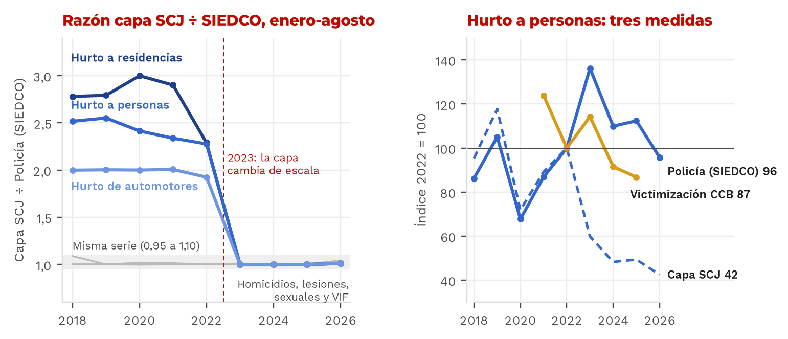
registro_razon_scj_siedco.csv, registro_hurto_personas.csv.| Año | Hurto a personas | Hurto a residencias | Hurto de automotores | Homicidios | Lesiones personales | Delitos sexuales | Violencia intrafamiliar |
|---|---|---|---|---|---|---|---|
| 2018 | 2,52 | 2,78 | 2,00 | 1,00 | 1,09 | 1,00 | 1,00 |
| 2019 | 2,55 | 2,79 | 2,00 | 1,00 | 1,00 | 1,00 | 1,00 |
| 2020 | 2,41 | 3,00 | 2,00 | 1,02 | 1,00 | 1,00 | 1,00 |
| 2021 | 2,34 | 2,90 | 2,01 | 1,01 | 1,00 | 1,00 | 1,00 |
| 2022 | 2,28 | 2,29 | 1,92 | 1,00 | 1,00 | 1,00 | 1,00 |
| 2023 | 1,00 | 1,00 | 1,00 | 1,00 | 1,00 | 1,00 | 1,00 |
| 2024 | 1,00 | 1,00 | 1,00 | 1,00 | 1,00 | 1,00 | 1,00 |
| 2025 | 1,00 | 1,00 | 1,00 | 1,00 | 1,00 | 1,00 | 1,00 |
| 2026 * | 1,01 | 1,01 | 1,01 | 1,00 | s. d. | 1,04 | 1,03 |
* 2026: corte enero-agosto de la capa frente al SIEDCO disponible a la fecha de consulta. Lesiones personales 2026 no está en la capa. Fuente: outputs/tablas/registro_razon_scj_siedco.csv.
| Columna de la capa | Dice medir | Desde 2023 coincide con | 2023 | 2024 | 2025 |
|---|---|---|---|---|---|
| HCE | Hurto de celulares | Hurto de motocicletas (SIEDCO) | 3.709 = 3.709 | 3.899 = 3.899 | 3.060 = 3.060 |
| HM | Hurto de motocicletas | Hurto a comercio (SIEDCO) | 9.036 = 9.036 | 7.788 = 7.788 | 6.461 = 6.461 |
Fuente: outputs/tablas/registro_etiquetas_cruzadas.csv.
| Año | Capa SCJ ene-ago | SIEDCO ene-ago | Razón | SIEDCO año completo | ECSC: víctimas de hurto (%) | ECSC: denuncia del hurto (%) | CCB: víctimas de hurto (%) † | CCB: denuncia del hurto (%) |
|---|---|---|---|---|---|---|---|---|
| 2018 | 170.219 | 67.633 | 2,52 | 105.964 | 17,6 | 37,0 | s. d. | s. d. |
| 2019 | 210.220 | 82.390 | 2,55 | 127.842 | 10,6 | 37,5 | s. d. | s. d. |
| 2020 | 128.265 | 53.135 | 2,41 | 83.136 | 7,0 | 34,3 | s. d. | s. d. |
| 2021 | 159.153 | 68.077 | 2,34 | 109.428 | 7,3 | 36,0 | 15,9 | s. d. |
| 2022 | 178.534 | 78.419 | 2,28 | 137.157 | s. d. | s. d. | 12,8 | 38,6 |
| 2023 | 106.824 | 106.823 | 1,00 | 158.745 | 6,9 | 42,9 | 14,7 | 38,8 |
| 2024 | 86.196 | 86.196 | 1,00 | 130.504 | s. d. | s. d. | 11,8 | 51,1 |
| 2025 | 88.114 | 88.116 | 1,00 | 123.017 | s. d. | s. d. | 11,1 | 43,2 |
| 2026 | 75.863 | 75.124 | 1,01 | parcial | s. d. | s. d. | s. d. | s. d. |
ECSC: año de referencia (la edición N pregunta por el año N−1); no hubo encuesta para 2017 ni 2022, y desde 2019 el campo pasó al segundo semestre, por lo que 2018 y antes no se comparan con 2019 y después. s. d.: sin dato. † Victimización por hurto de la CCB calculada = victimización × % de víctimas que sufrió hurto. La CCB no publica errores por indicador. Fuente: outputs/tablas/registro_hurto_personas.csv.
Es la única encuesta oficial con errores publicados. La victimización por hurto a personas pasa de 7,3 % a 6,9 % (−0,47 pp; IC 95 % −1,83 a 0,89; p = 0,50). La denuncia del hurto sube de 36,0 % a 42,9 % (+6,9 pp; p = 0,15) y la de cualquier delito, de 35,4 % a 43,1 % (p = 0,028).
Si la caída de la capa entre 2021 y 2023 (razón 0,67) se explicara por menos denuncia, con las víctimas que estimó el DANE (473 mil en 2021 y 454 mil en 2023) la denuncia del hurto habría tenido que bajar de 36,0 % a 25,2 %. La ECSC midió 42,9 % (EE 3,81 pp), 4,6 errores estándar por encima. La hipótesis «cayó la denuncia» queda descartada para ese intervalo.
La victimización por hurto (calculada) pasa de 12,8 % a 14,7 % y la denuncia del hurto, de 38,6 % a 38,8 %. Víctimas × denuncia sube 14,9 %, en línea con el SIEDCO de año completo (+15,7 %). La capa dice −40 %.
Con las dos series ya iguales, el registro baja 17,5 % entre 2023 y 2025. En la EPV la victimización por hurto baja 24 % y la denuncia sube de 38,8 % a 43,2 %: lo que cae desde 2023 parece ser el delito, no la denuncia. Es una sola encuesta, sin errores por indicador.
El hallazgo describe la comparabilidad de una serie publicada. No evalúa a la entidad ni su gestión. La capa no documenta su método para 2018-2022; que la razón de automotores sea casi exactamente 2,00 sugiere hechos contados dos veces (por ejemplo, al sumar dos bases sin deduplicar), pero es una hipótesis que solo la OAIEE puede confirmar. Recomendación técnica de documentación: anotar el cambio de 2023 en los metadatos de la capa, publicar la serie empalmada y contrastar cada serie con el SIEDCO y Medicina Legal antes de publicarla.
Consecuencias para este análisis. Las tendencias de hurto usan el SIEDCO (Bogotá) o la ventana 2023-2026 (localidades). Los cortes transversales de 2024-2025 no se afectan, porque desde 2023 la capa coincide con el SIEDCO.
Cada paso vive en un módulo de src/ y corre de punta a punta con python src/pipeline.py. La tabla resume la especificación, cómo se mide la incertidumbre y dónde queda el resultado. Las semillas de los remuestreos están fijas.
| Paso | Especificación | Incertidumbre e inferencia | Salida |
|---|---|---|---|
| Integración | Llave territorial: normalizador de nombres y códigos al código oficial de localidad (1-20); análisis en las 19 urbanas. Tasas por 100.000 habitantes con la población SDP del mismo año. Microdatos con su factor de expansión (Bienal) o de ponderación (EMV). A cada persona de la Bienal se le asigna el delito y las llamadas 123 de su localidad. Delito siempre enero-agosto. | Bitácora por fuente con conteos y controles de totales. | data/procesados/, bitacora_limpieza.csv |
| Validación del registro | Razón capa SCJ ÷ SIEDCO y ÷ Medicina Legal por delito y año. Entre 0,95 y 1,10: misma serie. | Contraste con la ECSC (errores publicados) y la EPV. | registro_*.csv |
| Tendencias | Binomial negativa de panel (19 localidades × años, enero-agosto): log μ = log(población) + efecto fijo de localidad + término de tiempo. Ventana 2022-2026 en series validadas; 2023-2026 en hurtos con quiebre. | Errores agrupados por localidad; IC 95 % del cambio anual. | tendencias_resumen.csv |
| Diagnóstico (H1) | Logit ponderado por el factor de expansión. Resultado: califica mala o muy mala la seguridad de su zona (P66.8). Variables: perfil (sexo, edad, estrato, arriendo), delito registrado de la localidad (hurtos y homicidios por 100.000, llamadas 123 por narcóticos) y hechos del entorno tomados de otras preguntas (P72, P53, P11, P67). Efectos marginales promedio (AME). | IC 95 % por bootstrap de conglomerados (300 réplicas, se remuestrean localidades); p con errores agrupados. | m_hechos.csv |
| Robustez | (a) Efectos fijos de localidad; (b) modelo lineal ponderado; (c) otros resultados: ciudad insegura y miedo en el espacio público; (d) calificaciones de la misma batería (alumbrado, ventas informales) en un modelo aparte, por sesgo de método común. | Wild cluster bootstrap con pesos de Webb (999 réplicas): p válido con 19 conglomerados. | m_efectos_fijos, lpm_wild, m_ciudad, m_miedo, m_calif |
| Predictivo | AUC fuera de muestra por bloques de variables (regresión logística). | Validación cruzada estratificada 5 × 5, ponderada. | auc.csv |
| Aprendizaje supervisado | Regresión logística L2, bosque aleatorio (400 árboles, hoja mínima 20) y gradient boosting por histogramas (300 iteraciones, tasa 0,05, 15 hojas, hoja mínima 40, L2 = 1), con el factor de expansión como peso. Importancia por bloques: se permutan juntas las variables de un bloque en los datos de prueba (gradient boosting). Prueba de contexto: delito registrado frente a efectos fijos de localidad. | 5 × 5 particiones (25 evaluaciones); AUC ponderada; media y desviación estándar. | ml_*.csv |
| Aprendizaje no supervisado | Ocho indicadores estandarizados de los cuatro frentes (logaritmo en tasas asimétricas); componentes principales; agrupamiento jerárquico de Ward; k entre 3 y 5 elegido por silueta. | Estabilidad con 500 perturbaciones: quitar un indicador al azar y remuestrear localidades. | tipologia_*.csv |
| Validaciones territoriales | Spearman entre las 19 localidades para ocho relaciones entre percepción, victimización, registro y entorno. Si dos índices comparten un componente, Spearman parcial: correlación de los residuos de los rangos frente a ese componente. | IC bootstrap (2.000 réplicas); Benjamini-Hochberg; parcial con gl = n − 3. | validaciones.csv, validacion_parcial.csv |
| Cifra oculta | Víctimas estimadas (% víctima en la EMV × adultos SDP 2024) ÷ delitos de alto impacto SCJ 2024 (enero-agosto × 12/8). Compara personas con hechos: es un orden de magnitud. | IC con el error estándar de la EMV por localidad; sensibilidad con la ECSC y la EPV. | cifra_oculta.csv |
| Índice de Brecha | IBS = z(% zona insegura) − z(ln delitos de alto impacto por 100.000). El logaritmo corrige la asimetría de la tasa en el centro. Comparte el delito registrado con la cifra oculta: no se usa para validarla. | Bootstrap ponderado dentro de cada localidad (1.000 réplicas): IC 90 % y probabilidad de top 5. | ibs.csv |
| Género | EMV: logit ponderado con sexo, edad, estrato y haber sido víctima. SIVIM: tasas por 100.000 mujeres; IC de los cambios con binomial negativa NB2 (α = 0,0276, panel 19 × 2013-2025 con efectos fijos de localidad y año). | AME con bootstrap por localidades; Spearman con IC BCa y BH para las hipótesis de entorno. | emv_*.csv, genero_* |
| Alumbrado y vías | 23 pruebas de Spearman entre condiciones (luminarias, malla vial, siniestralidad, calidad del alumbrado) y hurtos de 2025 por 100.000. | IC bootstrap (10.000 réplicas), p por permutación, BH dentro de cada bloque. | movilidad_pruebas_hipotesis.csv |
| Escenarios | Probabilidad predicha media por localidad con alumbrado malo = 0, atracos en el parque = 0, o ambos (modelo de hechos más alumbrado). | Sensibilidad del modelo, no efecto causal. | escenarios.csv |
Por qué estas decisiones. Con 19 localidades los errores agrupados analíticos son optimistas: por eso los IC de los AME salen de un bootstrap de conglomerados y la prueba clave del delito registrado usa wild cluster bootstrap. Las calificaciones del entorno comparten batería con la pregunta de seguridad y pueden inflarse por el juicio general de la persona: el modelo principal usa solo hechos de otras preguntas. Los modelos flexibles sirven para comprobar que la conclusión no depende de la forma funcional del logit.
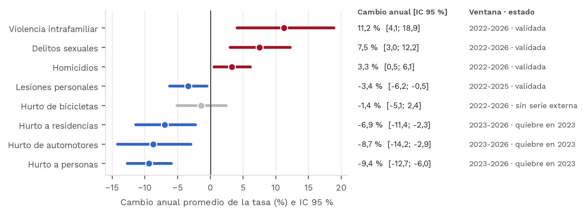
tendencias_resumen.csv.La violencia intrafamiliar crece 11,2 % al año, los delitos sexuales 7,5 % y los homicidios 3,3 %; los tres IC excluyen el cero. Lesiones personales baja 3,4 % al año (2022-2025). Los hurtos con quiebre solo se leen desde 2023: personas −9,4 %, automotores −8,7 % y residencias −6,9 % al año. El hurto de bicicletas no tiene serie externa para validarlo y su tendencia no se distingue de cero (−1,4 %; −5,1 a 2,4). Frente a 2019, la tasa de 2026 es 1,62 veces la de entonces en violencia intrafamiliar, 1,26 en delitos sexuales y 1,09 en homicidios.
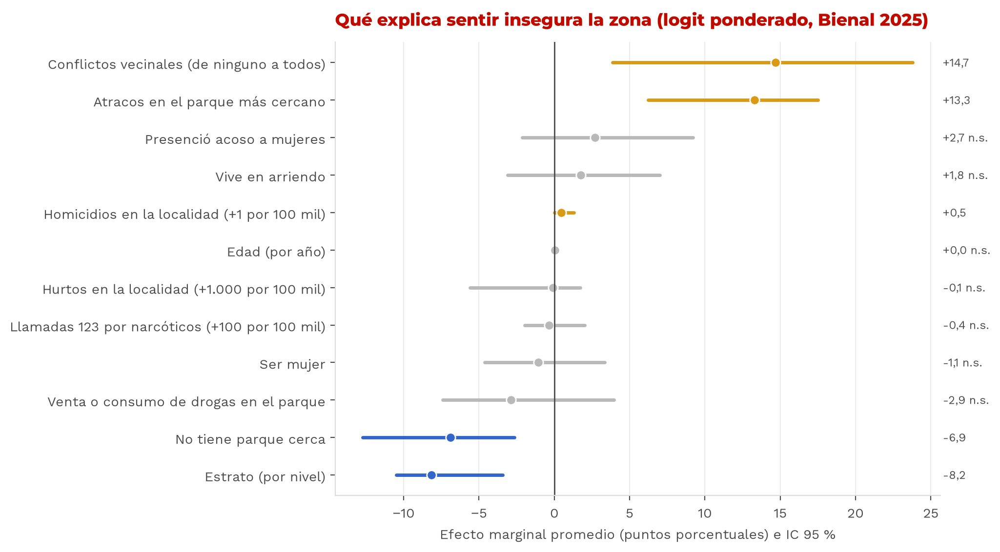
m_hechos.csv.| Variable | Modelo principal AME pp [IC 95 %] | Efectos fijos de localidad AME pp [IC 95 %] | Lineal: p wild (Webb, 999) | Con calificaciones AME pp [IC 95 %] |
|---|---|---|---|---|
| Atracos en el parque más cercano | +13,3 [6,2; 17,5] | +12,3 [5,9; 15,9] | < 0,001 | +10,2 [4,1; 14,3] |
| Conflictos vecinales (de ninguno a todos) | +14,7 [3,9; 23,8] | +15,4 [5,3; 25,0] | 0,046 | +11,7 [5,2; 18,8] |
| No tiene parque cerca | −6,9 [−12,7; −2,6] | −7,1 [−11,3; −3,0] | no probado | −13,1 [−17,6; −8,9] |
| Estrato (por nivel) | −8,2 [−10,5; −3,4] | −4,2 [−8,3; −0,5] | no probado | −5,8 [−7,1; −2,4] |
| Homicidios en la localidad (+1 por 100.000) | +0,5 [0,0; 1,3] | absorbido | 0,033 | +0,3 [−0,1; 1,4] |
| Hurtos en la localidad (+1.000 por 100.000) | −0,1 [−5,6; 1,7] | absorbido | 0,919 | −1,0 [−7,0; 1,4] |
| Llamadas 123 por narcóticos (+100 por 100.000) | −0,4 [−2,0; 2,0] | absorbido | 0,543 | +0,5 [−1,4; 3,0] |
«Absorbido»: con efectos fijos de localidad el delito registrado (un valor por localidad) no se identifica. Calificaciones del modelo complementario: alumbrado malo +15,7 pp [9,8; 20,1] y ventas informales malas +35,0 pp [30,4; 39,9]; comparten batería con la pregunta de seguridad y pueden estar infladas por sesgo de método común. Fuentes: m_hechos, m_efectos_fijos, lpm_wild, m_calif.
Ver atracos en el parque cercano (+13,3 pp) y vivir con conflictos vecinales (+14,7 pp) elevan con fuerza la probabilidad de sentir insegura la zona, y los dos efectos se sostienen con efectos fijos de localidad y con el wild bootstrap. El hurto registrado no tiene efecto en ninguna especificación (p wild = 0,92). El homicidio sí, pero pequeño: +0,47 pp por cada homicidio adicional por 100.000 habitantes (IC 0,02 a 1,31; p wild = 0,033); es la única variable del registro con señal. El estrato alto protege (−8,2 pp por nivel).
El barrio se juzga por el barrio. Para la ciudad en general los hechos del entorno no pesan (atracos en el parque +0,4 pp; IC −3,7 a 4,2). En el miedo al espacio público pesan la venta o consumo de drogas en el parque (+4,3 pp; 3,0 a 6,3) y ser mujer (+3,9 pp; 1,9 a 5,7).
| Bloque de variables (logística) | AUC | DE |
|---|---|---|
| Perfil (sexo, edad, estrato, tenencia) | 0,609 | 0,023 |
| Perfil + delito registrado | 0,611 | 0,021 |
| Perfil + hechos del entorno | 0,655 | 0,024 |
| Perfil + hechos + delito | 0,656 | 0,023 |
| Perfil + calificación del entorno | 0,755 | 0,016 |
| Todo | 0,782 | 0,017 |
Sumar el delito registrado al perfil mejora el AUC en 0,003; sumar los hechos del entorno, en 0,046. Fuente: auc.csv.
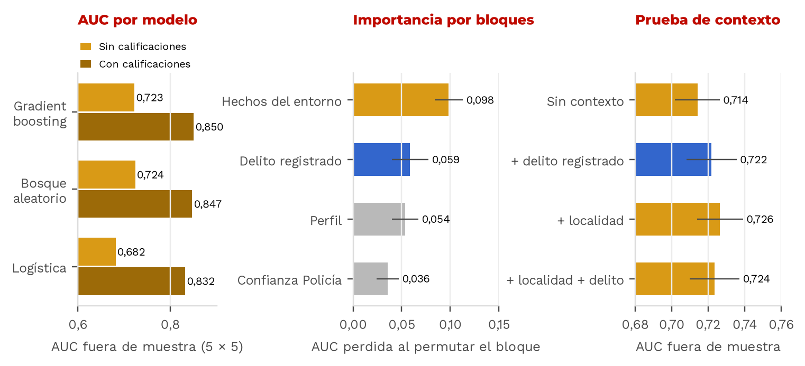
ml_comparacion_modelos*.csv, ml_importancia_bloques_sin_calificaciones.csv, ml_contexto_localidad.csv.El AUC es la probabilidad de ordenar bien una pareja tomada al azar: una persona que siente insegura su zona y otra que no. Con hechos del entorno y contexto, los modelos flexibles ordenan bien 72 de cada 100 parejas (bosque aleatorio 0,724; gradient boosting 0,723; logística 0,682). Con las calificaciones del barrio, 85 de cada 100 (gradient boosting 0,850; bosque 0,847; logística 0,832), con la cautela del sesgo de método común: esas calificaciones concentran la importancia (0,253 de AUC perdida). Sin ellas, los hechos del entorno son el bloque que más AUC aporta (0,098). El delito registrado pierde 0,059 al permutarse, pero la prueba de contexto muestra que esa información es la localidad: con efectos fijos de localidad el AUC es 0,726 y al sumar el delito registrado queda en 0,724. El 54,1 % de los adultos desconfía de la Policía; ese bloque aporta 0,036.
En 2024 hubo unas 5,6 víctimas por cada delito registrado. La EMV mide más victimización (24,6 % de los adultos) que la ECSC (14,7 %) y la EPV (15,3 %), así que la proporción que llega al registro va de 1,8 a 3,0 de cada 10. Por eso reportamos un rango y no un valor único. Por localidad, la razón va de 10,6 en Bosa a 0,7 en Los Mártires; en el centro el registro cuenta dónde ocurre el delito y la encuesta dónde vive la víctima, y la población flotante baja la razón. Con 96 encuestas por localidad los intervalos son amplios (Bosa: 7,0 a 14,3). Entre localidades, las víctimas que reporta la EMV no siguen al delito registrado (ρ = 0,03; p = 0,91): el registro no dice dónde están las víctimas, y eso respalda repartir por víctimas, no solo por denuncias.
| Relación entre las 19 localidades | ρ | IC 95 % | p | p BH |
|---|---|---|---|---|
| Drogas en el parque (Bienal) y llamadas 123 por narcóticos | −0,08 | −0,57 a 0,40 | 0,732 | 0,836 |
| Zona insegura (Bienal) y llamadas 123 por riñas | +0,22 | −0,33 a 0,66 | 0,355 | 0,711 |
| Alumbrado malo (Bienal) y luminarias por km² (UAESP 2019) | −0,11 | −0,59 a 0,43 | 0,652 | 0,836 |
| Víctimas (EMV) y delitos registrados (SCJ) | +0,03 | −0,49 a 0,50 | 0,915 | 0,915 |
| Zona insegura (Bienal) y delitos registrados (SCJ) | −0,25 | −0,69 a 0,30 | 0,304 | 0,711 |
| Barrio inseguro (EMV) y zona insegura (Bienal) | +0,35 | −0,21 a 0,76 | 0,147 | 0,589 |
| Zona insegura (Bienal) y víctimas por delito registrado (prueba directa) | +0,16 | −0,32 a 0,58 | 0,509 | 0,815 |
| Índice de Brecha y víctimas por delito registrado (mecánica †) | +0,72 | 0,41 a 0,88 | < 0,001 | 0,005 |
| † La misma relación controlando el delito registrado (Spearman parcial, gl = n − 3) | −0,02 | −0,49 a 0,58 | 0,929 | no aplica |
Siete de las ocho relaciones son nulas: el registro no ordena las localidades como la victimización ni como la percepción. La única que pasa la corrección (Índice de Brecha y cifra oculta) es mecánica: al controlar el delito registrado desaparece (fila en cursiva) y la prueba directa entre miedo y cifra oculta es nula. Fuentes: validaciones.csv, validacion_parcial.csv.
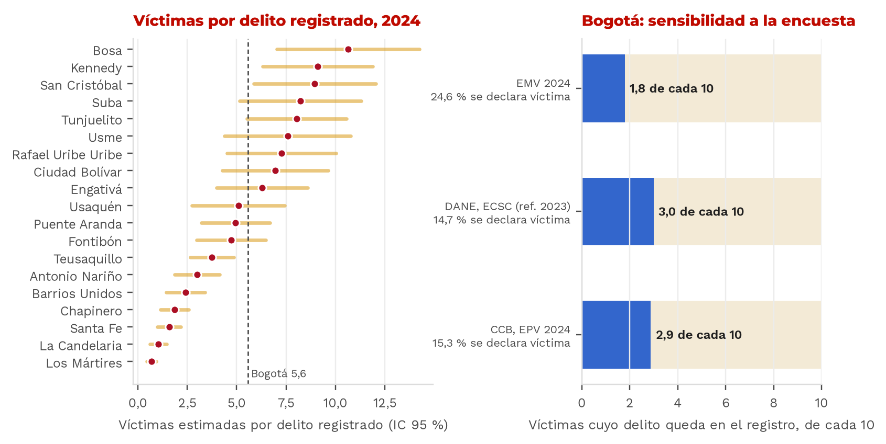
cifra_oculta.csv; sensibilidad calculada con visor/data/frentes.json.El IBS mide cuántas desviaciones estándar se separa el miedo de lo que muestra el registro. Los cinco valores más altos son Usme (+2,67; IC 90 % 2,23 a 2,98), Ciudad Bolívar (+2,34), Bosa (+1,97), Kennedy (+1,72) y San Cristóbal (+1,54), con probabilidad de top 5 en el bootstrap de 1,00; 1,00; 0,995; 0,983 y 0,909. La sexta, Rafael Uribe Uribe (+0,91), entra al top 5 en el 11 % de las réplicas, así que el corte es estable. En el otro extremo están Los Mártires (−2,12) y Teusaquillo (−2,03), donde la tasa por residente se infla por la población flotante. El ranking ordena dónde actuar primero; no prueba causas. La tabla completa está en el Anexo.
Probamos nuestro propio titular. La primera versión del análisis presentaba como hallazgo que el IBS crece donde más delito queda sin registrar: ρ = 0,72 (IC 95 % 0,41 a 0,88), que pasa la corrección BH (p ajustado 0,005). Antes de cerrarlo revisamos cómo se construye cada índice. El IBS resta z(ln delitos registrados) y la cifra oculta divide por los delitos registrados: los dos llevan el registro adentro. Entre localidades, el delito registrado se asocia con la cifra oculta con ρ = −0,92 y con el IBS con ρ = −0,79 (Figura 6, paneles A y B). Dos índices que comparten un componente tan fuerte se correlacionan aunque el miedo y el subregistro no tengan relación.
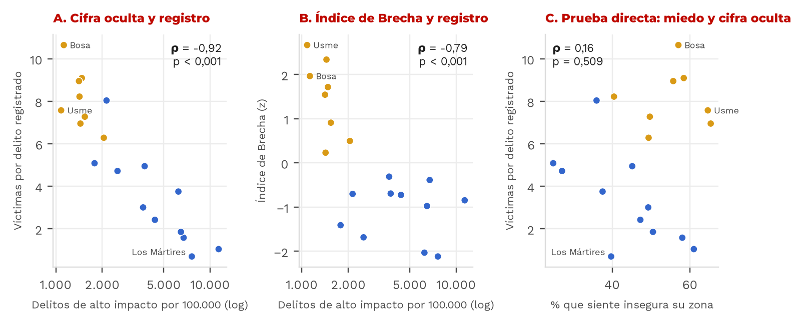
ibs.csv, cifra_oculta.csv, data/procesados/panel_localidad_2025.csv; pruebas en validaciones.csv y validacion_parcial.csv.Dos pruebas lo confirman. Con Spearman parcial, controlando el delito registrado (residuos de los rangos, gl = n − 3), la correlación cae a −0,02 (IC 95 % −0,49 a 0,58; p = 0,93). La prueba directa entre el % que siente insegura su zona y la cifra oculta da ρ = 0,16 (IC 95 % −0,32 a 0,58; p = 0,51). H2 no se sostiene. Lo que sí se sostiene es más simple y sirve igual para decidir: el registro no ordena las localidades como la victimización (ρ = 0,03), y de cada 10 víctimas solo entre 1,8 y 3,0 llegan al registro.
Por qué lo reportamos así. La corrección por pruebas múltiples protege contra el azar, no contra relaciones construidas. Cuando dos indicadores comparten un componente, la prueba que cuenta es la parcial o la directa. Cualquier evaluador puede repetirla con src/indicadores.py (función spearman_parcial).
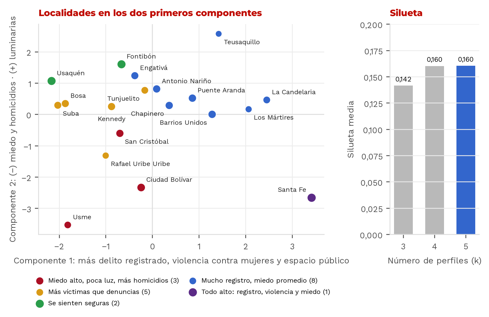
tipologia_localidades.csv, tipologia_pca_cargas.csv, tipologia_silueta.csv.La silueta es baja con cualquier número de perfiles (0,142 con tres; 0,160 con cuatro y con cinco), así que los grupos no están bien separados y se presentan como descripción. El primer componente ordena por registro y violencia contra mujeres (cargas de 0,58 en delitos de alto impacto y 0,61 en violencia intrafamiliar y sexual); el segundo opone luminarias (+0,48) a homicidios (−0,47) y percepción de inseguridad (−0,46). El perfil más útil para decidir agrupa a San Cristóbal, Usme y Ciudad Bolívar: miedo alto, pocas luminarias y más homicidios con poco delito registrado. Su centroide está 1,20 desviaciones estándar arriba en zona insegura, 0,81 arriba en homicidios, 1,05 abajo en delitos registrados y 1,58 abajo en luminarias. La estabilidad (frecuencia con que cada localidad queda con sus pares en 500 perturbaciones) es 0,62, 0,42 y 0,77. Santa Fe forma un perfil propio. Detalle en tipologia_perfiles_z.csv y en el Anexo.
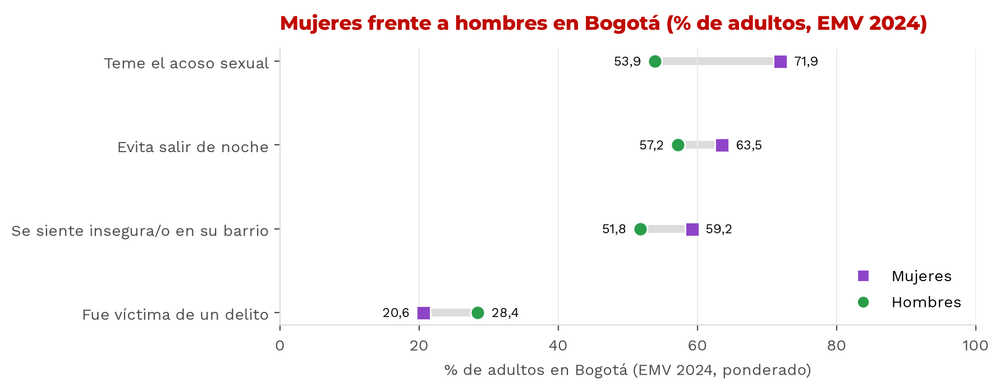
emv_*.csv.En la EMV las mujeres reportan menos victimización que los hombres (20,6 % frente a 28,4 %) y aun así temen más. Con sexo, edad, estrato y victimización como controles, ser mujer suma +18,0 pp al temor al acoso sexual (12,9 a 23,4), +9,3 pp a sentir inseguro el barrio (5,0 a 13,9) y +6,5 pp a evitar salir de noche (1,0 a 11,5). Haber sido víctima suma 19,5 pp a sentir inseguro el barrio.
En la encuesta de acoso callejero de la Veeduría (2025), que es un formulario en línea y solo describe, el 51,8 % de las mujeres que respondieron (n = 2.742) dice haber sido acosada en el último año, frente al 16,1 % de los hombres (n = 877). Solo el 8,4 % de ellas denunció.
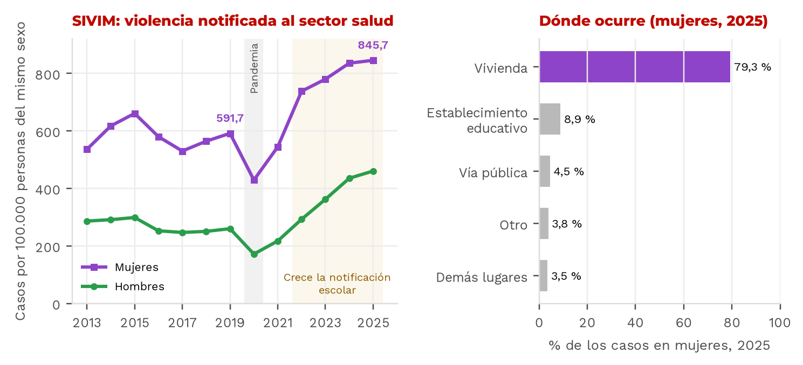
data/procesados/genero_violencia_localidad_anio.csv, genero_violencia_perfil.csv.La tasa SIVIM en mujeres pasó de 591,7 por 100.000 en 2019 a 845,7 en 2025 (+42,9 %; IC 95 % 24,4 a 64,3). Frente a 2022 el cambio es +14,6 % (−0,4 a 31,8) y no se distingue de cero. Parte del aumento es registro: el 64,8 % del aumento de casos en mujeres entre 2019 y 2025 está en niñas de 6 a 17 años, y la violencia sexual notificada en establecimientos educativos pasó de 411 a 2.835 casos. Las adultas también suben (+40,2 % en mujeres de 18 años o más). El 79,3 % de los casos de 2025 ocurrió en la vivienda y el 4,5 % en la vía pública. Por eso la iluminación (ρ = 0,02) y los puntos de internet público (ρ = −0,28) no se asocian con esa violencia por localidad; el menor p ajustado es 0,38. Con 19 localidades, una prueba al 5 % solo tiene 80 % de potencia para |ρ| ≥ 0,60: «no hay evidencia» no equivale a «no hay relación».
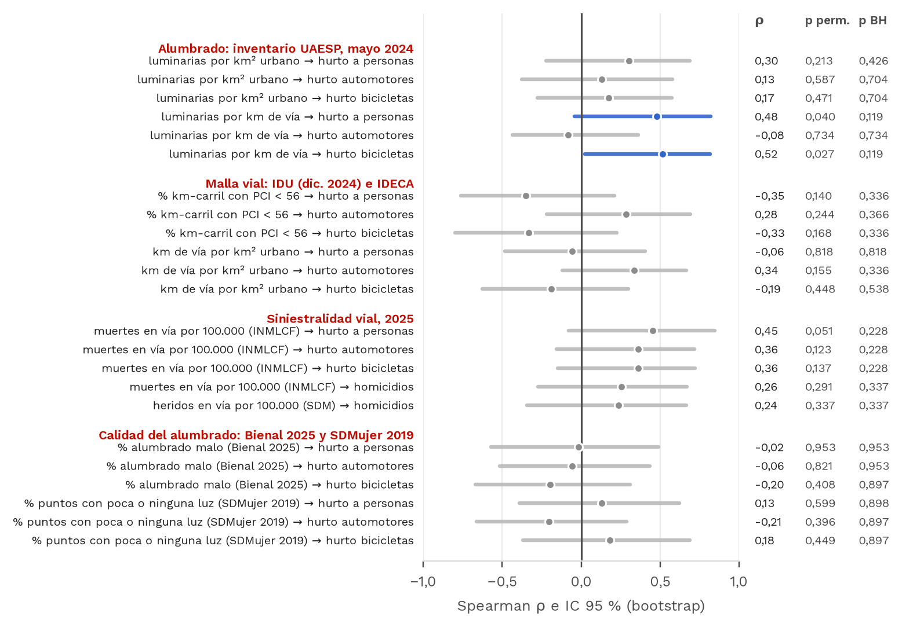
movilidad_pruebas_hipotesis.csv.Donde hay más luminarias por km de vía hay más hurto a personas (ρ = 0,48; p = 0,040) y de bicicletas (ρ = 0,52; p = 0,027): es el centro, con más luz y más hurto por residente; tras la corrección, p = 0,119. El inventario no mide «peor alumbrado»: hay entre 39,6 (Ciudad Bolívar) y 56,8 (La Candelaria) luminarias por km de vía, con una variación de 10 % entre localidades, porque las luminarias siguen a la vía. La malla vial tiene 22,4 % de km-carril en mal estado (diciembre de 2024) y no se asocia con el hurto (ρ entre −0,35 y 0,28). En una sensibilidad con el promedio 2023-2025, el hurto sí sube con las muertes en vía (ρ de 0,53 a 0,57; p ajustado 0,029), pero las dos tasas comparten el denominador de residentes; al controlar por habitantes por km de vía, el ρ parcial baja a 0,30-0,38. Lo más probable es que ambas midan actividad y tránsito de no residentes.
| Lo que se esperaba | Hipótesis | Cómo se probó | Lo que salió | Veredicto |
|---|---|---|---|---|
| La serie de hurto es comparable en el tiempo | H0 | Razón capa SCJ ÷ SIEDCO por año | 2,28 a 2,55 veces hasta 2022; 1,00 desde 2023 | No se sostiene |
| El delito registrado explica el miedo | H1 | Logit con wild bootstrap; prueba de contexto en ML | p wild = 0,92; AUC 0,726 sin él y 0,724 con él | No se sostiene |
| Peor alumbrado, más hurto | Adicional | Spearman, 19 localidades, BH | Luminarias por km de vía ρ = +0,48 (al revés); alumbrado malo ρ = −0,02 | No se sostiene |
| Vías en mal estado, más hurto | Adicional | Spearman con el PCI del IDU | ρ = −0,35, p BH = 0,34 | No se sostiene |
| Más luz o internet, menos violencia contra ellas | Adicional | Spearman con la tasa SIVIM | Iluminación ρ = +0,02; conectividad ρ = −0,28 | No se sostiene |
| El entorno del barrio explica el miedo | H1 | AME con IC por bootstrap de localidades | Atracos en el parque +13,3 pp [6,2; 17,5] | Se sostiene |
| Donde sobra miedo, falta denuncia | H2 | Spearman con BH; parcial controlando el delito registrado; prueba directa | ρ = 0,72 bruta, pero mecánica: parcial −0,02 (p = 0,93); miedo y cifra oculta 0,16 (p = 0,51) | No se sostiene |
| A igual victimización, ellas temen más | H3 | Logit ponderado (EMV) | +18,0 pp de temor al acoso [12,9; 23,4] | Se sostiene |
El rechazo de «la serie de hurto es comparable» confirma H0: había que validar antes de comparar. H2 pasó la primera prueba y cayó con el control por el componente compartido (sección 6.4). Un resultado nulo también es evidencia: evita gastar en lo que no mueve la percepción. Fuentes: registro_estado_series.csv, lpm_wild.csv, ml_contexto_localidad.csv, movilidad_pruebas_hipotesis.csv, genero_pruebas_spearman.csv, m_hechos.csv, validaciones.csv, validacion_parcial.csv, emv_teme_acoso_sexual.csv.
Las ocho hipótesis se escribieron con su criterio de decisión antes de ver los resultados (sección 2.3). Por eso un rechazo es un resultado: dice qué explicación descartar y hacia dónde mirar después. Tres de las ocho son creencias frecuentes del debate público (alumbrado, vías, luz e internet) y las probamos a propósito, porque son las que más orientan la inversión. La Tabla 9 muestra cómo cada descarte cambió el paso siguiente.
| Lo que descartamos | Por qué cayó | Qué hicimos con eso |
|---|---|---|
| La serie de hurto es comparable en el tiempo | Hasta 2022 la capa abierta contaba 2,28 a 2,55 veces lo que registra la Policía; desde 2023 coinciden caso por caso. | Cambiamos la serie de trabajo por el SIEDCO, la confirmamos con Medicina Legal y las encuestas del DANE y la CCB, y corregimos la premisa: el hurto a personas bajó 4,2 % desde 2022, no 57,5 %. Todo lo demás se apoya en esta corrección. |
| El delito registrado explica el miedo | No tiene efecto en ninguna especificación (p wild = 0,92) y no mejora la predicción (AUC 0,726 sin él y 0,724 con él). | Buscamos la explicación en el entorno inmediato. Los atracos en el parque (+13,3 pp) y los conflictos vecinales (+14,7 pp) sí explican el miedo: es la primera hipótesis que se sostiene (H1). |
| Alumbrado, vías, luz e internet | Ninguna de las 23 pruebas sobrevive a la corrección por pruebas múltiples; las más fuertes van al revés (más luminarias donde hay más hurto, que es el centro). El 79,3 % de la violencia contra mujeres notificada a salud ocurre en la vivienda, donde la luz pública no llega. | Las dejamos como estrategia exploratoria y no como prioridad de inversión. Un nulo también orienta el gasto: evita invertir en lo que no mueve la percepción. |
| Donde sobra miedo, falta denuncia (H2) | La primera prueba dio ρ = 0,72, pero los dos índices llevan el delito registrado. Al controlarlo, ρ = −0,02 (p = 0,93); la prueba directa entre miedo y cifra oculta da 0,16 (p = 0,51). | La reportamos como no sostenida en lugar de quedarnos con la correlación alta. Con 19 localidades solo se detectan relaciones de |ρ| ≥ 0,60; para probarla bien falta medir la victimización por UPL, y esa falta es la que motiva la propuesta final (sección 7.2). |
¿Se aprovechó la información? Sí, y los rechazos lo muestran. Salvo H3, que se prueba dentro de una misma encuesta, cada hipótesis cruzó al menos dos de las 18 fuentes: registro contra registro (SCJ, SIEDCO, Medicina Legal), encuesta contra registro (Bienal, EMV y ECSC frente a SCJ) e inventarios del entorno contra delito (UAESP, IDU, IDECA, SIVIM). Cada descarte cambió el paso siguiente: la validación del registro cambió la pregunta, el nulo del delito registrado llevó al entorno y la caída de H2 llevó a pedir el dato que falta. Lo que no se pudo probar responde a tres límites de los datos disponibles, no a un uso incompleto de ellos: el delito solo se publica por localidad (19 unidades y poca potencia estadística), la victimización no se mide por UPL ni todos los años (la ECSC no tiene 2022 ni 2024-2026) y la percepción de 2025 es de un solo año.
El miedo no baja porque el delito registrado bajó mucho menos de lo que mostraba la serie abierta, porque el miedo responde al entorno inmediato y no al delito registrado (H1), y porque las mujeres cargan un temor adicional a igual victimización (H3: +18,0 pp de temor al acoso). Las dos hipótesis que se sostienen son las que se convierten en acción: parques sin atracos, mediación vecinal y rutas para las mujeres, en el orden del Índice de Brecha.
Cada estrategia sale de un resultado del análisis y lleva un nivel de evidencia que combina la fuente más débil que usa con la prueba estadística: alta si las fuentes tienen score ≥ 70 y la prueba es significativa tras corregir por pruebas múltiples y robusta a otra especificación; media si falla una de las dos condiciones; exploratoria si la fuente es débil o el resultado no es significativo (src/confiabilidad.py).
| # | Estrategia | Por qué (evidencia) | Qué hacer | Evidencia | Indicador de seguimiento |
|---|---|---|---|---|---|
| 1 | Validar antes de decidir | La capa abierta dice −57,5 % de hurto a personas desde 2022; la Policía, −4,2 %. | Documentar el cambio de 2023 en los metadatos, publicar la serie empalmada y contrastar cada serie con SIEDCO y Medicina Legal antes de publicarla. | alta | Razón capa ÷ SIEDCO entre 0,95 y 1,10 en todo delito y año |
| 2 | Barrios que se sienten seguros | Atracos en el parque: +13,3 pp; conflictos vecinales: +14,7 pp. El hurto registrado no pesa. | Parques activos y sin atracos, mediación de conflictos vecinales. Sensibilidad del modelo: unas 467 mil personas menos con miedo si se cubre la mitad. | alta | % que califica mala la seguridad de su zona |
| 3 | Repartir por víctimas, no solo por denuncias | Las víctimas que reporta la encuesta no siguen al delito registrado entre localidades (ρ = 0,03), y de cada 10 víctimas solo 1,8 a 3,0 llegan al registro. | Asignar con víctimas estimadas por encuesta además del registro. Usar el Índice de Brecha para ordenar territorios, no como prueba de subregistro. | media | Víctimas estimadas e Índice de Brecha, por UPL |
| 4 | Medir lo que no se denuncia | El 57 % de las víctimas no denuncia (ECSC, 2023). La encuesta oficial no se hizo en 2022 y no tiene datos de 2024 a 2026. | Encuesta de victimización por UPL cada semestre (EDP), que pregunte si denunció y dónde ocurrió el hecho. | media | Tasa de denuncia y víctimas por delito registrado, por UPL |
| 5 | Dos rutas para las mujeres | 8 de cada 10 casos de violencia contra ellas notificados a salud ocurren en la vivienda; a igual victimización, +18,0 pp de temor al acoso. | Calle: rutas nocturnas y denuncia fácil del acoso. Casa: detección en colegios y servicios de salud, donde ya llegan los casos. | media | % de mujeres que evita salir de noche; tasa SIVIM; % de acoso denunciado |
| 6 | Paquete para San Cristóbal, Usme y Ciudad Bolívar | Mismo perfil: miedo alto, pocas luminarias, más homicidios. En San Cristóbal la tasa de homicidios de 2025-2026 supera en 54 % la de 2022-2023. | Alumbrado y senderos, presencia en parques y foco en homicidios, juntos y en el mismo territorio. | exploratoria | Índice de Brecha y homicidios por 100.000 |
Escenarios (sensibilidad del modelo). En Bogotá, el modelo predice que el 48,4 % califica mala la seguridad de su zona. Si nadie calificara malo el alumbrado, la cifra bajaría a 37,5 %; si ningún parque tuviera atracos, a 44,6 %; con ambas condiciones, a 33,5 %. Con la mitad de cobertura en las dos palancas la baja es de 7,4 pp, unas 467 mil personas sobre 6.308.418 adultos urbanos. El alumbrado entra como calificación de la misma batería que la pregunta de seguridad, así que su parte está probablemente sobrestimada. Un piloto con línea base y grupo de comparación confirmaría el efecto. Fuente: escenarios.csv.
| Campo | Definición |
|---|---|
| Objetivo | Ordenar los territorios donde la inseguridad percibida supera lo que muestra el delito registrado, para priorizar intervenciones de entorno. Ordena; no prueba causas. |
| Fórmula | IBS = z(% de adultos que califican mala o muy mala la seguridad de su zona) − z(ln de delitos de alto impacto por 100.000 habitantes). La estandarización se hace entre las localidades (o UPL) del mismo periodo. |
| Unidad y lectura | Desviaciones estándar. Positivo: más miedo que registro. Negativo: más registro que miedo entre quienes viven ahí. |
| Fuentes | Percepción: Encuesta Distrital de Percepción (SDP) o Bienal de Cultura Ciudadana (SCRD). Delito: SCJ, delitos de alto impacto (sin lesiones personales). Población: SDP, proyecciones 2005-2035. |
| Periodicidad y desagregación | Semestral por sector de UPL y anual por localidad y UPL (representatividad de la EDP); bienal con la Bienal. Localidad, UPL, sexo, edad y estrato (la percepción admite todas; el delito, solo territorio). |
| Incertidumbre | IC 90 % por bootstrap ponderado de la encuesta (1.000 réplicas); se reporta la probabilidad de cada territorio de estar en el top 5. |
| Línea base 2025 | 48,4 % califica mala la seguridad de su zona; 74,0 % califica insegura la ciudad. Top 5: Usme (+2,67), Ciudad Bolívar (+2,34), Bosa (+1,97), Kennedy (+1,72) y San Cristóbal (+1,54). |
| Acompañantes | (1) Víctimas por delito registrado (cifra oculta), EMV o EDP frente a SCJ. (2) % de mujeres que evita salir de noche, por sexo. |
| Meta sugerida | IBS menor a +1 en las cinco localidades priorizadas y menor cifra oculta en la periferia al cierre del periodo de gobierno. |
| Limitaciones | El delito registrado son denuncias y tiene subregistro. En el centro la tasa por residente se infla por la población flotante. La percepción tiene error muestral (ver intervalos). No sirve para validar la cifra oculta: los dos comparten el delito registrado (sección 6.4). Cálculo: src/indicadores.py, función indice_brecha. |
Este proyecto cruzó una vez 18 fuentes que hoy están separadas, con formatos, llaves territoriales y periodicidades distintas. La propuesta es que el Distrito tenga ese cruce de forma frecuente y automática, y que sume el dato que hoy no existe: lo que la gente vive y no denuncia. Responde a los tres límites que no dejaron probar todas las hipótesis y convierte las estrategias 1, 3 y 4 en un sistema que funciona todo el año.
| Componente | Qué hace | De dónde sale |
|---|---|---|
| 1. Registro ciudadano (web, app y WhatsApp) | La persona reporta en pocos pasos un hurto, una agresión, un acoso o un hecho del entorno (atraco en el parque, riña), con la UPZ, la fecha y si denunció. No reemplaza la denuncia: al terminar la lleva al canal oficial (Policía, Línea 123 y las líneas de atención a mujeres). | Mide de forma continua la cifra oculta por UPZ, el dato que faltó para probar H2. El 57 % de las víctimas no denuncia y de cada 10 víctimas solo 1,8 a 3,0 llegan al registro. |
| 2. Cruce automático de las fuentes | Cada mes descarga cada fuente con su fecha y huella digital, la contrasta con una fuente independiente, la une por código de localidad y UPZ y recalcula la cifra oculta, el Índice de Brecha y las tendencias. Si una serie sale del rango 0,95 a 1,10 frente a su referencia, genera una alerta antes de publicar. | Es el pipeline de este repositorio (src/pipeline.py): integra las 18 fuentes y corre completo en unos 9 minutos desde un clon limpio. |
| 3. Tablero público y de decisión | Publica cada mes el Índice de Brecha, la cifra oculta y las series validadas por localidad y UPZ, en datos abiertos (CSV y GeoJSON) y en Power BI para los equipos de planeación y las alcaldías locales. | Reutiliza el visor, el tablero de Power BI y los formatos abiertos ya entregados. |
La propuesta complementa los canales y sistemas que ya existen; no evalúa a ninguna entidad. Su valor está en conectar lo que hoy se publica por separado y en medir lo que hoy no se registra.
Las agrupamos por el tipo de conclusión que pueden afectar. Para cada una indicamos qué hicimos y qué riesgo queda.
| Tipo | Amenaza | Qué hicimos | Riesgo que queda |
|---|---|---|---|
| Validez interna | Asociación, no causalidad: no hay asignación aleatoria y puede haber confusión territorial. | Controles de perfil, efectos fijos de localidad, varias especificaciones y modelos flexibles. | Los AME y los escenarios no son efectos causales. |
| Validez interna | Sesgo de método común: alumbrado y ventas informales se califican en la misma batería que la seguridad de la zona. | Modelo principal solo con hechos de otras preguntas; calificaciones reportadas aparte. | El peso del alumbrado en los escenarios está probablemente sobrestimado. |
| Medición | Quiebre de la capa SCJ en los hurtos; método de 2018-2022 no documentado. | Validación con SIEDCO, Medicina Legal, ECSC y EPV; tendencias solo en la ventana comparable. | La causa del quiebre (doble conteo) es una hipótesis. |
| Medición | El registro son denuncias; SIVIM cuenta casos notificados, no personas, y desde 2022 crece la notificación escolar. | Cifra oculta con tres encuestas; lectura del SIVIM por grupo de edad y lugar. | No se puede separar cuánto del aumento SIVIM es violencia y cuánto notificación. |
| Medición | Las encuestas de victimización no coinciden en nivel (EMV 24,6 %, ECSC 14,7 %, EPV 15,3 %). La cifra oculta compara personas con hechos. | Rango de 1,8 a 3,0 de cada 10 en lugar de un valor único; lectura como orden de magnitud. | El nivel exacto del subregistro es incierto; la conclusión no cambia. |
| Medición | La ECSC no tiene 2022 ni 2024-2026 y cambió el mes de campo en 2019; en 2023 la recordación es de 10 a 28 meses. La EPV no publica errores por indicador y sus cifras se transcribieron de gráficos. | Contraste formal 2021-2023; cada cifra de la CCB con documento, página y gráfico en victimizacion_transcritos.csv. | Si la recordación sesga, sesga hacia menos victimización, lo que refuerza que el delito no cayó. |
| Medición | Luminarias instaladas no son luz. La auditoría nocturna de 2019 tiene efecto techo y su orden de localidades no se repite frente a 2016. | Sensibilidad con la percepción del alumbrado y la auditoría. | No hay datos abiertos de luminarias apagadas ni de niveles de iluminación medidos. |
| Conclusión estadística | Con 19 localidades las pruebas territoriales tienen poca potencia (80 % solo para |ρ| ≥ 0,60); muchas pruebas a la vez. | IC bootstrap, p por permutación y corrección BH; wild cluster bootstrap para pocos conglomerados. | Un nulo territorial puede ocultar relaciones moderadas. |
| Conclusión estadística | Índices con un componente compartido: el IBS y la cifra oculta llevan el delito registrado y se correlacionan por construcción (ρ = 0,72). | Spearman parcial (−0,02) y prueba directa (0,16); H2 se reporta como no sostenida. | El IBS sirve para ordenar territorios, no como evidencia de subregistro. |
| Conclusión estadística | Tipología con estructura débil (silueta ≈ 0,16). | Se presenta como descripción, con estabilidad por localidad. | Los perfiles pueden cambiar con otros indicadores. |
| Validez externa | La Bienal es un solo año; la EMV tiene 96 encuestas por localidad con ponderación nacional; el delito solo existe por localidad y enero-agosto. | Intervalos por bootstrap y se propone la EDP por UPL para el seguimiento. | Resultados por localidad, no por barrio. La EDP 2025 no se pudo descargar en forma automatizada. |
| Validez externa | En el centro las tasas por residente se inflan por la población flotante. Sumapaz (rural) queda fuera. | Logaritmo en el IBS; lectura explícita del centro en cifra oculta e IBS. | El centro se lee con cautela en toda medida por residente. |
Requisitos: Python 3.11 o superior (el visor necesita además Node 20 o superior).
git clone https://github.com/rlondono1620-max/el-miedo-que-no-baja.git cd el-miedo-que-no-baja python -m venv .venv .venv\Scripts\activate # Linux o macOS: source .venv/bin/activate pip install -r requirements.txt python src/pipeline.py # todo el análisis, ≈ 6 min jupyter notebook notebooks/el_miedo_que_no_baja.ipynb
src/fuentes.py baja cada fuente desde su servicio oficial a data/crudos/ y anota URL, fecha, bytes y sha1 en registro_descargas.csv. Las notas de docs/notas/ dan la URL de cada recurso. Si el archivo existe usa la copia local: el análisis corre sin red.outputs/resultados.json y outputs/tablas/ alimentan el notebook, el visor, el libro de Excel, el tablero de Power BI y este informe.Notebook ejecutado (notebooks/), visor interpretativo (el-miedo-que-no-baja.vercel.app, con clave), tablero de Power BI (powerbi/), libro de datos con fórmulas vivas y simulador (docs/), nota técnica de una página y este informe.
Ordenadas por el Índice de Brecha de Seguridad. Zona insegura: Bienal 2025, ponderada. Delitos de alto impacto: SCJ, enero-agosto 2025. Víctimas por delito: EMV 2024 frente a SCJ 2024. Estabilidad: frecuencia con que la localidad queda con los demás miembros de su perfil en 500 perturbaciones.
| # | Localidad | Zona insegura (%) | Delitos alto impacto por 100.000 | IBS [IC 90 %] | P(top 5) | Víctimas por delito [IC 95 %] | Perfil de la tipología (estabilidad) |
|---|---|---|---|---|---|---|---|
| 1 | Usme | 64,6 | 1.083 | +2,67 [2,23; 2,98] | 1,000 | 7,6 [4,4; 10,8] | Miedo alto, poca luz, más homicidios (0,42) |
| 2 | Ciudad Bolívar | 65,4 | 1.444 | +2,34 [1,94; 2,61] | 1,000 | 7,0 [4,3; 9,6] | Miedo alto, poca luz, más homicidios (0,77) |
| 3 | Bosa | 57,1 | 1.127 | +1,97 [1,49; 2,39] | 0,995 | 10,6 [7,0; 14,3] | Más víctimas que denuncias (0,58) |
| 4 | Kennedy | 58,4 | 1.475 | +1,72 [1,29; 2,08] | 0,983 | 9,1 [6,3; 11,9] | Más víctimas que denuncias (0,61) |
| 5 | San Cristóbal | 55,7 | 1.413 | +1,54 [1,00; 2,02] | 0,909 | 9,0 [5,9; 12,1] | Miedo alto, poca luz, más homicidios (0,62) |
| 6 | Rafael Uribe Uribe | 49,7 | 1.542 | +0,91 [0,42; 1,38] | 0,110 | 7,3 [4,5; 10,0] | Más víctimas que denuncias (0,29) |
| 7 | Engativá | 49,4 | 2.047 | +0,50 [0,18; 0,82] | 0,002 | 6,3 [4,0; 8,6] | Mucho registro, miedo promedio (0,58) |
| 8 | Suba | 40,5 | 1.425 | +0,23 [−0,06; 0,59] | 0,001 | 8,2 [5,2; 11,3] | Más víctimas que denuncias (0,54) |
| 9 | Antonio Nariño | 49,3 | 3.679 | −0,31 [−0,78; 0,13] | 0,000 | 3,0 [1,9; 4,2] | Mucho registro, miedo promedio (0,65) |
| 10 | Santa Fe | 58,1 | 6.732 | −0,39 [−0,99; 0,10] | 0,000 | 1,6 [1,0; 2,2] | Todo alto: registro, violencia y miedo (1,00) |
| 11 | Puente Aranda | 45,2 | 3.763 | −0,69 [−1,16; −0,17] | 0,000 | 4,9 [3,2; 6,7] | Mucho registro, miedo promedio (0,67) |
| 12 | Tunjuelito | 36,0 | 2.132 | −0,70 [−1,05; −0,23] | 0,000 | 8,0 [5,5; 10,6] | Más víctimas que denuncias (0,46) |
| 13 | Barrios Unidos | 47,3 | 4.388 | −0,72 [−1,18; −0,27] | 0,000 | 2,4 [1,4; 3,4] | Mucho registro, miedo promedio (0,68) |
| 14 | La Candelaria | 61,0 | 11.351 | −0,85 [−1,60; −0,25] | 0,000 | 1,0 [0,6; 1,5] | Mucho registro, miedo promedio (0,46) |
| 15 | Chapinero | 50,5 | 6.466 | −0,98 [−1,48; −0,52] | 0,000 | 1,9 [1,1; 2,6] | Mucho registro, miedo promedio (0,63) |
| 16 | Usaquén | 24,8 | 1.782 | −1,41 [−1,63; −1,01] | 0,000 | 5,1 [2,7; 7,4] | Se sienten seguras (0,95) |
| 17 | Fontibón | 27,1 | 2.511 | −1,68 [−1,92; −1,29] | 0,000 | 4,7 [3,0; 6,5] | Se sienten seguras (0,95) |
| 18 | Teusaquillo | 37,5 | 6.227 | −2,03 [−2,44; −1,51] | 0,000 | 3,8 [2,7; 4,9] | Mucho registro, miedo promedio (0,17) |
| 19 | Los Mártires | 39,7 | 7.610 | −2,12 [−2,60; −1,55] | 0,000 | 0,7 [0,5; 0,9] | Mucho registro, miedo promedio (0,26) |
Fuentes: outputs/tablas/ibs.csv, cifra_oculta.csv, tipologia_localidades.csv.
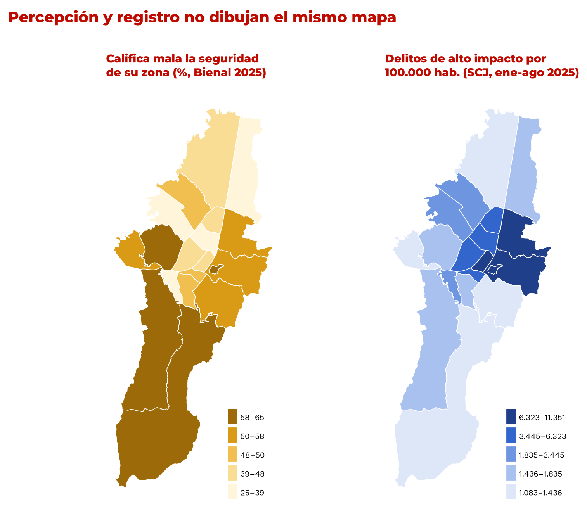
outputs/geo/.